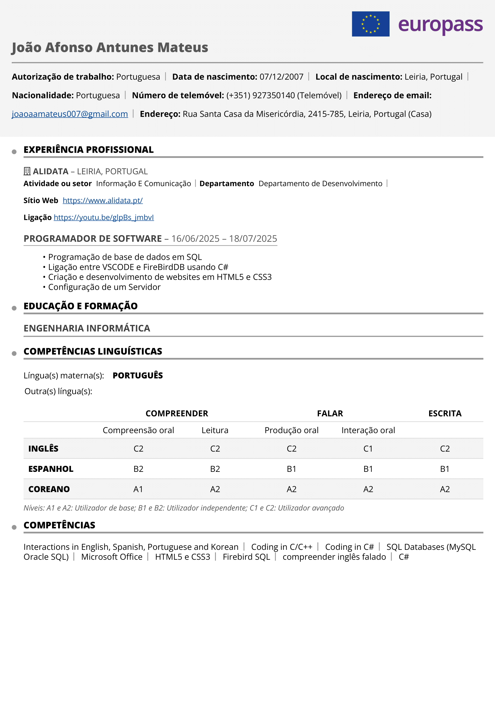

Mis prácticas en Alidata
Presentación de la empresa
Alidata es una empresa portuguesa fundada en 1983, especializada en el desarrollo de software de gestión. A lo largo de más de 40 años de actividad, se ha destacado en el sector tecnológico por su capacidad de innovación, su constante adaptación a las necesidades de los clientes y por la creación de soluciones informáticas que siguen la evolución del mercado. Actualmente tiene empresas distribuidas por varios continentes, incluyendo países como Angola, Brasil, China (Macao), entre otros.
En Alidata existen dos categorías principales: Hardware y Software. En el área de Hardware encontramos montaje de ordenadores, contacto con clientes y socios para la resolución de problemas con sus equipos informáticos, además de tener una sección centrada en impresoras en la misma planta.
Por otro lado, el Software abarca la sala en la que estuve, el Departamento de Desarrollo, donde los programadores tienen tareas conjuntas según los pedidos de los clientes. Otro departamento existente es el de organización y distribución de tareas entre los programadores, así como el departamento de formación, soporte técnico y marketing.
Actividades desarrolladas
Durante mis prácticas en Alidata, aprendí a programar en SQL, y también a utilizar la base de datos FireBird (IBExpert - IDE). Conecté la base de datos a Visual Studio Community usando C#, e hice registros y modificaciones en la base de datos desde allí. Tras finalizar ese proyecto, realicé autoaprendizaje de HTML5 y CSS3 para poder desarrollar el proyecto final, que consistía en una pequeña página web.
Además, pasé un día en hardware para tener una experiencia distinta, configuré un servidor e instalé en él una máquina virtual con Windows 11, donde tuve que usar un método para hacer bypass al TPM 2.0 y configurar Windows para usarlo localmente (sin internet).
Dificultades encontradas
Mis únicas dificultades fueron al principio, donde tuve que adaptarme drásticamente a una nueva base de datos, programación en SQL y conexión con Visual Studio. No obstante, con el paso de los días, todo se fue volviendo más comprensible y sencillo.
Aspectos relevantes
Mi relación con los empleados fue siempre profesional. Aun así, todo el equipo de Alidata es bastante alegre, positivo y acogedor. Siempre estuve rodeado de personas, algunas más extrovertidas que otras, pero me llevé bien con todos.
La tutora de prácticas siempre se preocupó por mi trabajo, por si todo iba bien, y siempre estuvo dispuesta a ayudar. No obstante, me permitió trabajar a mi ritmo y me dio la libertad suficiente para ser autónomo e independiente en el trabajo que realicé durante las 5 semanas de prácticas.
Lo que aprendí y me habría gustado aprender
Aprendí a usar una nueva base de datos (Firebird), que es, de hecho, algo más profesional y avanzada. Aun así, logré adaptarme y aprender a programar en SQL.
Tras ese aprendizaje, aprendí un poco más de C# de lo que ya sabía y conecté a la base de datos usando una combinación de C# y SQL. Algo desafiante, pero que con dedicación y esfuerzo se consiguió.
Y por último, aprendí los dos lenguajes más comunes para el desarrollo de páginas web, HTML y CSS. Este autoaprendizaje me ayudó a ganar más autonomía y motivación en la adquisición de conocimientos de forma independiente.
Algo que no aprendí debido al poco tiempo de prácticas fue el lenguaje de programación JavaScript, que sería de gran utilidad para la elaboración de páginas web.
Conclusión
Creo que, por encima de todo, en este corto período de tiempo desarrollé nuevas capacidades y habilidades. Gané autonomía, independencia y más determinación gracias a las tareas que realicé.
La experiencia que se me ofreció y transmitió no se adquiere en un entorno escolar, sino en un entorno laboral, como en esta empresa de software. Para concluir, una vez más reconozco con gratitud toda la ayuda y apoyo que me fue prestado, mencionando a las dos personas que más se destacaron hasta el final: Nelly y Pedro. No podría haber pedido unas prácticas mejores.
¡Gracias Alidata!
Ver CV (Imagen)
Descargar CV
Enlace PDF